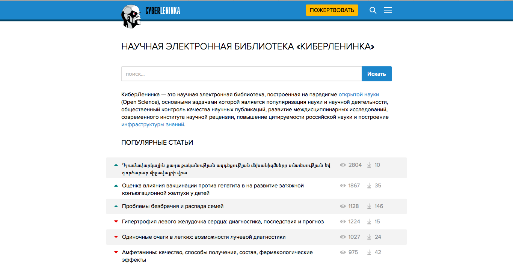

Трохина Алёна Александровна
Студентка 1-ого курса НИУ ВШЭ, факультет гуманитарных наук:Филология
О себе: Натура творческая с двумя дипломами о художественном образовании на руках, цинитель качественной музыки, а также хорошего кино
Научные интересы:Классика зарубежной и отечественной литературы. Испытание временем
Как современные технологии могут помочь филологу?
В XXI веке современные технологии обрели особую актуальность во всех сферах жизни. Говоря об их значимости в филологии, следует отметить, что филологические ресурсы Интернета являются, пожалуй, главным источником информации для литературоведа. К таким ресурсам относятся электронные энциклопедии, сайты библиотек, институтов, а также блоги научных исследователей, специализирующихся в сфере лингвистики, языкознания и литературоведения. Постоянный просмотр данных платформ позволяет филологу быть в курсе того, что происходит в научном мире, а также способствует саморазвитию и пополнению собственных знаний.
Какие это могут быть образовательные платформы?
КиберЛенинка
Этот информационный ресурс известен, пожалуй, не только филологам и языковедам, но и просто людям, которые интересуются изучением научных статей различного профиля. КиберЛенинка предоставляет уникальную возможность предоставить научную литературу, а также междисциплинарные исследования совершенно бесплатно.
Ну, а теперь немного о достоинствах и недостатках данной интернет платформы.
Достоинства:бесплатная поисковая система по научным текстам всех форматов и дисциплин;открытый доступ, экспорт информации на мировые платформы, такие как Google,BASE и т.д.; отптмизация контента, позволяющая обеспечить его видимость и охватить больше контента.
Недостатки:отсутсвие расширенного поиска, который бы значительно упростил процесс подбора необходимой статьи; присутвие некоторой перегруженности сайта из-за нечеткого разделения научных статей; наличие рекламы, неудобное размещение рецензии на статью после перечня похожих тем.

В свою очередь могу сказать, что у всех вкусы разные. Поэтому решать Вам, пользоваться КиберЛенкой или нет:)